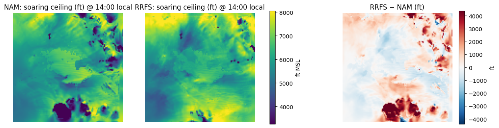
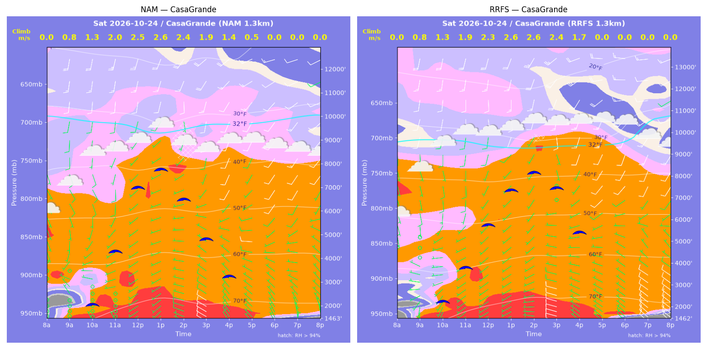
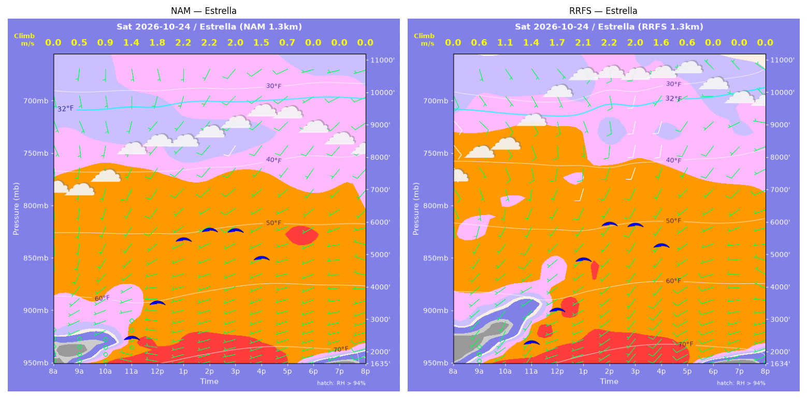
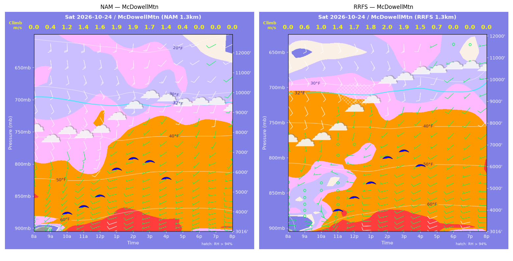
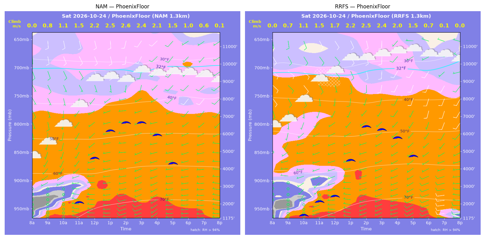
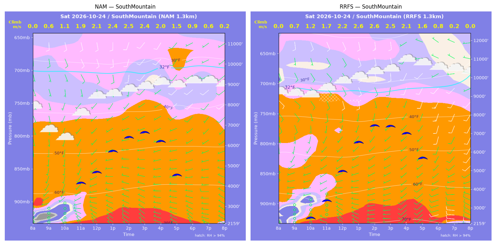
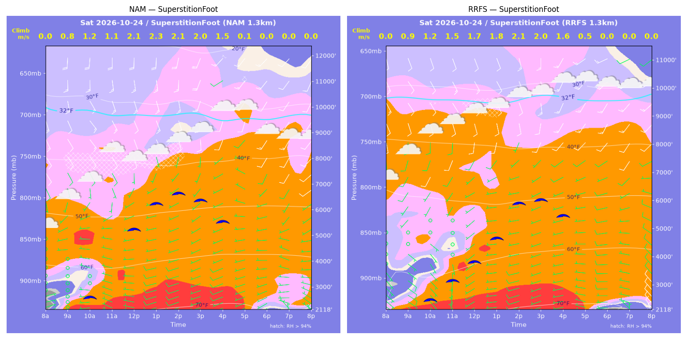
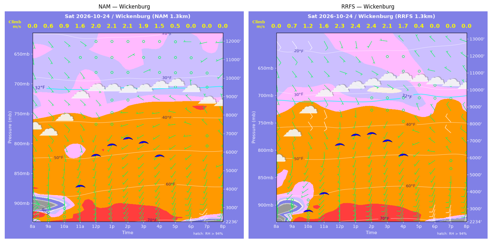

../runs/ab-phoenix-nam — model nam, cycle 2026-10-23 18z, dx 1.3333333740234374 km, 13 hours, grid 114×114../runs/ab-phoenix-rrfs — model rrfs, cycle 2026-10-23 18z, dx 1.3333333740234374 km, 13 hours, grid 114×114Grids identical; afternoon = 12:00–17:59 local (UTC-7). Δ = RRFS − NAM.
| Site | terrain ft | BL top (AGL) med|Δ| / bias (ft) | w* med|Δ| / bias (fpm) | Soaring ceiling med|Δ| / bias (ft) | BL wind speed med|Δ| / bias (kt) | BL wind dir med|Δ| / bias (deg) | 2 m temperature med|Δ| / bias (F) | Sfc LCL (AGL) med|Δ| / bias (ft) | Sensible heat flux med|Δ| / bias (W/m2) |
|---|---|---|---|---|---|---|---|---|---|
| PhoenixFloor | 1176 | 600 / -904 | 8 / -29 | 405 / -708 | 2 / +2 | 14 / -7 | 0 / -0 | 1135 / +1026 | 4 / -1 |
| SouthMountain | 2159 | 1010 / +1048 | 23 / +27 | 796 / +786 | 2 / +2 | 36 / -32 | 1 / +1 | 1503 / +1568 | 7 / +9 |
| SuperstitionFoot | 2119 | 1322 / -716 | 40 / -17 | 552 / -695 | 2 / -0 | 27 / +32 | 0 / -0 | 893 / +799 | 18 / -9 |
| Estrella | 1635 | 250 / -67 | 12 / +2 | 187 / -23 | 0 / +1 | 23 / -21 | 1 / +0 | 1481 / +1551 | 11 / +11 |
| Wickenburg | 2236 | 784 / +158 | 50 / +42 | 565 / +561 | 2 / +1 | 49 / -16 | 1 / +1 | 941 / +918 | 51 / +42 |
| CasaGrande | 1463 | 1837 / +968 | 44 / +6 | 1424 / +784 | 3 / +2 | 21 / -27 | 1 / +1 | 1495 / +1304 | 5 / +1 |
| McDowellMtn | 3017 | 535 / -391 | 26 / +23 | 238 / -144 | 2 / -2 | 12 / +21 | 0 / +0 | 597 / +571 | 40 / +34 |
| Metric | n | median |Δ| | p90 |Δ| | bias |
|---|---|---|---|---|
| BL top (AGL) (ft) | 42 | 660 | 2091 | +14 |
| w* (fpm) | 42 | 23 | 71 | +8 |
| Soaring ceiling (ft) | 42 | 417 | 1630 | +80 |
| BL wind speed (kt) | 42 | 2 | 4 | +1 |
| BL wind dir (deg) | 42 | 24 | 68 | -7 |
| 2 m temperature (F) | 42 | 1 | 1 | +1 |
| Sfc LCL (AGL) (ft) | 42 | 1141 | 1740 | +1105 |
| Sensible heat flux (W/m2) | 42 | 11 | 49 | +13 |
diffmap_tol.png| local | BL top NAM/RRFS ft | w* NAM/RRFS fpm | ceiling NAM/RRFS ft | BL wind NAM/RRFS | T2 NAM/RRFS F | HFX NAM/RRFS |
|---|---|---|---|---|---|---|
| 08:00 | 0 / 0 | 0 / 0 | 1176 / 1175 | 2kt@053 / 2kt@231 | 63 / 63 | 0 / 0 |
| 09:00 | 878 / 740 | 156 / 146 | 1176 / 1175 | 2kt@081 / 2kt@235 | 67 / 66 | 67 / 65 |
| 10:00 | 1322 / 1341 | 220 / 226 | 1176 / 1415 | 1kt@224 / 3kt@211 | 70 / 69 | 125 / 133 |
| 11:00 | 1967 / 2006 | 288 / 299 | 2132 / 2199 | 5kt@263 / 4kt@223 | 72 / 72 | 188 / 207 |
| 12:00 | 5223 / 2362 | 431 / 328 | 4646 / 2499 | 7kt@231 / 6kt@248 | 75 / 74 | 240 / 233 |
| 13:00 | 7138 / 4999 | 496 / 438 | 6186 / 4520 | 5kt@230 / 6kt@242 | 76 / 76 | 267 / 263 |
| 14:00 | 7751 / 7443 | 503 / 500 | 6642 / 6415 | 6kt@186 / 8kt@179 | 77 / 77 | 257 / 264 |
| 15:00 | 7911 / 7382 | 479 / 466 | 6660 / 6241 | 4kt@193 / 9kt@190 | 78 / 78 | 218 / 215 |
| 16:00 | 7431 / 7172 | 404 / 402 | 5959 / 5783 | 7kt@222 / 9kt@204 | 78 / 78 | 139 / 143 |
| 17:00 | 6444 / 7115 | 291 / 295 | 4360 / 4749 | 6kt@242 / 9kt@198 | 77 / 78 | 60 / 57 |
| 18:00 | 6035 / 4071 | 192 / 146 | 1176 / 1175 | 9kt@220 / 7kt@227 | 76 / 77 | 18 / 12 |
| 19:00 | 5504 / 265 | 124 / 29 | 1176 / 1175 | 6kt@230 / 8kt@263 | 76 / 76 | 5 / 1 |
| 20:00 | 258 / 646 | 16 / 0 | 1176 / 1175 | 6kt@273 / 9kt@268 | 75 / 74 | 0 / -2 |
| local | BL top NAM/RRFS ft | w* NAM/RRFS fpm | ceiling NAM/RRFS ft | BL wind NAM/RRFS | T2 NAM/RRFS F | HFX NAM/RRFS |
|---|---|---|---|---|---|---|
| 08:00 | 0 / 0 | 0 / 0 | 2159 / 2159 | 1kt@276 / 1kt@252 | 63 / 63 | 0 / 0 |
| 09:00 | 445 / 656 | 119 / 128 | 2159 / 2159 | 1kt@248 / 1kt@260 | 65 / 66 | 59 / 49 |
| 10:00 | 1018 / 1400 | 210 / 234 | 2159 / 2541 | 2kt@250 / 3kt@234 | 66 / 67 | 139 / 141 |
| 11:00 | 3375 / 2351 | 367 / 327 | 4216 / 3471 | 7kt@199 / 6kt@239 | 68 / 69 | 227 / 229 |
| 12:00 | 3974 / 4296 | 414 / 437 | 4748 / 5031 | 7kt@221 / 5kt@219 | 69 / 71 | 275 / 302 |
| 13:00 | 5250 / 6243 | 465 / 505 | 5759 / 6570 | 6kt@229 / 7kt@184 | 71 / 72 | 296 / 321 |
| 14:00 | 6154 / 7413 | 484 / 519 | 6444 / 7443 | 6kt@212 / 9kt@158 | 72 / 73 | 286 / 293 |
| 15:00 | 6616 / 7533 | 464 / 486 | 6691 / 7410 | 9kt@220 / 8kt@188 | 72 / 73 | 234 / 237 |
| 16:00 | 6383 / 7410 | 400 / 421 | 6248 / 7029 | 6kt@219 / 10kt@201 | 72 / 73 | 156 / 157 |
| 17:00 | 5020 / 6793 | 288 / 307 | 4609 / 5730 | 7kt@240 / 11kt@201 | 72 / 73 | 74 / 66 |
| 18:00 | 3280 / 2788 | 176 / 150 | 2159 / 2159 | 6kt@250 / 7kt@228 | 71 / 72 | 26 / 19 |
| 19:00 | 2553 / 184 | 126 / 39 | 2159 / 2159 | 7kt@268 / 11kt@275 | 71 / 70 | 12 / 5 |
| 20:00 | 229 / 1336 | 41 / 0 | 2159 / 2159 | 7kt@293 / 8kt@292 | 70 / 70 | 5 / -4 |
| local | BL top NAM/RRFS ft | w* NAM/RRFS fpm | ceiling NAM/RRFS ft | BL wind NAM/RRFS | T2 NAM/RRFS F | HFX NAM/RRFS |
|---|---|---|---|---|---|---|
| 08:00 | 0 / 0 | 0 / 0 | 2119 / 2119 | 4kt@070 / 5kt@118 | 61 / 61 | 0 / 0 |
| 09:00 | 851 / 904 | 149 / 167 | 2119 / 2119 | 1kt@003 / 8kt@124 | 66 / 65 | 59 / 79 |
| 10:00 | 1622 / 1464 | 241 / 235 | 2643 / 2527 | 3kt@284 / 5kt@136 | 68 / 68 | 133 / 134 |
| 11:00 | 3019 / 2174 | 222 / 294 | 2119 / 3205 | 5kt@265 / 2kt@169 | 70 / 69 | 56 / 179 |
| 12:00 | 4824 / 3002 | 414 / 342 | 5263 / 3859 | 4kt@200 / 3kt@227 | 71 / 70 | 228 / 205 |
| 13:00 | 6102 / 4297 | 454 / 358 | 6261 / 4693 | 8kt@165 / 5kt@260 | 72 / 72 | 237 / 164 |
| 14:00 | 6932 / 5785 | 417 / 418 | 6655 / 5907 | 10kt@166 / 7kt@201 | 73 / 73 | 163 / 195 |
| 15:00 | 6692 / 6253 | 398 / 384 | 6393 / 6035 | 10kt@176 / 10kt@203 | 73 / 73 | 146 / 139 |
| 16:00 | 7010 / 6431 | 291 / 306 | 5574 / 5484 | 9kt@203 / 12kt@219 | 73 / 73 | 54 / 68 |
| 17:00 | 2806 / 4304 | 27 / 93 | 2119 / 2119 | 5kt@260 / 7kt@255 | 72 / 72 | -0 / 2 |
| 18:00 | 289 / 388 | 0 / 0 | 2119 / 2119 | 5kt@241 / 7kt@260 | 67 / 68 | -0 / -1 |
| 19:00 | 83 / 329 | 0 / 0 | 2119 / 2119 | 4kt@347 / 7kt@282 | 66 / 66 | -2 / -3 |
| 20:00 | 354 / 1042 | 0 / 0 | 2119 / 2119 | 5kt@305 / 9kt@320 | 64 / 66 | -3 / -10 |
| local | BL top NAM/RRFS ft | w* NAM/RRFS fpm | ceiling NAM/RRFS ft | BL wind NAM/RRFS | T2 NAM/RRFS F | HFX NAM/RRFS |
|---|---|---|---|---|---|---|
| 08:00 | 0 / 0 | 0 / 0 | 1635 / 1635 | 1kt@187 / 2kt@207 | 60 / 62 | 0 / 0 |
| 09:00 | 352 / 538 | 98 / 126 | 1635 / 1635 | 1kt@130 / 3kt@213 | 66 / 65 | 41 / 56 |
| 10:00 | 858 / 1088 | 175 / 209 | 1635 / 1635 | 2kt@235 / 4kt@206 | 68 / 66 | 95 / 129 |
| 11:00 | 1994 / 1698 | 268 / 267 | 2497 / 2366 | 5kt@249 / 5kt@224 | 70 / 69 | 147 / 172 |
| 12:00 | 3319 / 2977 | 346 / 343 | 3575 / 3364 | 6kt@239 / 6kt@233 | 72 / 72 | 191 / 209 |
| 13:00 | 5867 / 4989 | 426 / 415 | 5512 / 4890 | 8kt@225 / 8kt@202 | 73 / 74 | 203 / 222 |
| 14:00 | 6314 / 6484 | 424 / 435 | 5796 / 5959 | 9kt@220 / 9kt@195 | 74 / 75 | 186 / 197 |
| 15:00 | 6577 / 6722 | 387 / 399 | 5772 / 5935 | 9kt@214 / 11kt@191 | 75 / 75 | 136 / 147 |
| 16:00 | 6337 / 6629 | 305 / 324 | 4941 / 5309 | 7kt@219 / 10kt@190 | 75 / 75 | 68 / 79 |
| 17:00 | 5630 / 5839 | 136 / 118 | 1635 / 1635 | 7kt@230 / 7kt@211 | 74 / 74 | 6 / 4 |
| 18:00 | 814 / 740 | 0 / 0 | 1635 / 1635 | 7kt@253 / 9kt@249 | 70 / 69 | -2 / -3 |
| 19:00 | 368 / 352 | 0 / 0 | 1635 / 1635 | 7kt@246 / 8kt@245 | 69 / 68 | -0 / -0 |
| 20:00 | 495 / 84 | 0 / 0 | 1635 / 1635 | 8kt@254 / 1kt@135 | 67 / 67 | -0 / -0 |
| local | BL top NAM/RRFS ft | w* NAM/RRFS fpm | ceiling NAM/RRFS ft | BL wind NAM/RRFS | T2 NAM/RRFS F | HFX NAM/RRFS |
|---|---|---|---|---|---|---|
| 08:00 | 0 / 0 | 0 / 0 | 2236 / 2235 | 5kt@047 / 3kt@311 | 58 / 57 | 0 / 0 |
| 09:00 | 737 / 808 | 118 / 144 | 2236 / 2235 | 1kt@056 / 4kt@349 | 64 / 65 | 32 / 56 |
| 10:00 | 1219 / 2025 | 183 / 244 | 2236 / 2921 | 5kt@178 / 4kt@236 | 67 / 69 | 74 / 110 |
| 11:00 | 3686 / 3097 | 313 / 322 | 4212 / 3943 | 4kt@185 / 7kt@208 | 69 / 70 | 123 / 166 |
| 12:00 | 5714 / 6701 | 393 / 459 | 5863 / 6806 | 3kt@177 / 7kt@163 | 71 / 72 | 159 / 222 |
| 13:00 | 6420 / 7375 | 415 / 479 | 6424 / 7349 | 1kt@201 / 4kt@153 | 71 / 73 | 166 / 230 |
| 14:00 | 6965 / 7578 | 411 / 467 | 6757 / 7439 | 1kt@309 / 2kt@130 | 72 / 73 | 148 / 207 |
| 15:00 | 7041 / 7304 | 372 / 416 | 6560 / 7008 | 3kt@301 / 2kt@101 | 72 / 73 | 108 / 152 |
| 16:00 | 7033 / 7043 | 299 / 330 | 5829 / 6199 | 4kt@296 / 1kt@333 | 72 / 73 | 55 / 78 |
| 17:00 | 6220 / 4340 | 99 / 88 | 2236 / 2235 | 4kt@280 / 4kt@229 | 71 / 72 | 1 / 2 |
| 18:00 | 1341 / 1226 | 0 / 0 | 2236 / 2235 | 8kt@201 / 9kt@200 | 68 / 67 | -6 / -7 |
| 19:00 | 745 / 595 | 0 / 0 | 2236 / 2235 | 9kt@217 / 10kt@190 | 66 / 65 | -7 / -9 |
| 20:00 | 540 / 365 | 0 / 0 | 2236 / 2235 | 9kt@204 / 9kt@190 | 65 / 63 | -12 / -5 |
| local | BL top NAM/RRFS ft | w* NAM/RRFS fpm | ceiling NAM/RRFS ft | BL wind NAM/RRFS | T2 NAM/RRFS F | HFX NAM/RRFS |
|---|---|---|---|---|---|---|
| 08:00 | 0 / 0 | 0 / 0 | 1463 / 1463 | 1kt@117 / 3kt@186 | 64 / 60 | 0 / 0 |
| 09:00 | 809 / 780 | 155 / 160 | 1463 / 1463 | 2kt@317 / 5kt@215 | 69 / 68 | 70 / 81 |
| 10:00 | 1721 / 1956 | 250 / 263 | 2092 / 2279 | 3kt@287 / 6kt@263 | 72 / 71 | 139 / 144 |
| 11:00 | 4539 / 3882 | 388 / 369 | 4323 / 3837 | 8kt@181 / 5kt@242 | 74 / 74 | 200 / 202 |
| 12:00 | 7879 / 6319 | 493 / 459 | 6984 / 5772 | 7kt@213 / 7kt@205 | 76 / 75 | 237 / 238 |
| 13:00 | 8853 / 8322 | 513 / 503 | 7749 / 7334 | 8kt@211 / 9kt@199 | 77 / 77 | 238 / 239 |
| 14:00 | 7328 / 9442 | 467 / 505 | 6496 / 8133 | 5kt@227 / 12kt@196 | 76 / 77 | 217 / 213 |
| 15:00 | 5414 / 8699 | 382 / 464 | 4845 / 7424 | 5kt@216 / 9kt@173 | 76 / 77 | 160 / 180 |
| 16:00 | 3939 / 7022 | 278 / 329 | 3288 / 5406 | 4kt@276 / 7kt@203 | 76 / 77 | 85 / 79 |
| 17:00 | 2444 / 1862 | 93 / 0 | 1463 / 1463 | 7kt@289 / 5kt@293 | 75 / 76 | 5 / -1 |
| 18:00 | 1053 / 704 | 0 / 0 | 1463 / 1463 | 7kt@318 / 7kt@306 | 70 / 70 | -3 / -6 |
| 19:00 | 383 / 809 | 0 / 0 | 1463 / 1463 | 5kt@343 / 13kt@308 | 69 / 68 | -2 / -16 |
| 20:00 | 84 / 507 | 0 / 0 | 1463 / 1463 | 3kt@004 / 14kt@307 | 68 / 66 | -1 / -14 |
| local | BL top NAM/RRFS ft | w* NAM/RRFS fpm | ceiling NAM/RRFS ft | BL wind NAM/RRFS | T2 NAM/RRFS F | HFX NAM/RRFS |
|---|---|---|---|---|---|---|
| 08:00 | 0 / 0 | 0 / 0 | 3017 / 3017 | 1kt@091 / 4kt@077 | 60 / 60 | 0 / 0 |
| 09:00 | 253 / 445 | 70 / 111 | 3017 / 3017 | 2kt@240 / 5kt@085 | 63 / 61 | 18 / 45 |
| 10:00 | 3019 / 1145 | 241 / 194 | 3990 / 3017 | 6kt@191 / 3kt@148 | 65 / 63 | 65 / 95 |
| 11:00 | 2834 / 2334 | 279 / 274 | 4334 / 4069 | 8kt@219 / 1kt@291 | 65 / 65 | 110 / 132 |
| 12:00 | 3385 / 2941 | 318 / 326 | 4863 / 4654 | 9kt@219 / 4kt@288 | 66 / 66 | 137 / 177 |
| 13:00 | 5232 / 3800 | 367 / 360 | 6206 / 5304 | 11kt@183 / 5kt@250 | 67 / 67 | 136 / 185 |
| 14:00 | 6078 / 5453 | 368 / 389 | 6722 / 6455 | 10kt@188 / 8kt@199 | 68 / 68 | 117 / 162 |
| 15:00 | 6304 / 6132 | 332 / 368 | 6585 / 6756 | 8kt@208 / 8kt@195 | 68 / 68 | 82 / 122 |
| 16:00 | 6386 / 6069 | 266 / 297 | 5751 / 6095 | 7kt@217 / 8kt@207 | 68 / 68 | 40 / 64 |
| 17:00 | 5208 / 5856 | 87 / 138 | 3017 / 3017 | 8kt@219 / 8kt@221 | 67 / 68 | -1 / 6 |
| 18:00 | 975 / 2648 | 0 / 0 | 3017 / 3017 | 6kt@248 / 7kt@242 | 65 / 65 | -2 / -6 |
| 19:00 | 1256 / 1546 | 0 / 0 | 3017 / 3017 | 6kt@259 / 8kt@253 | 63 / 63 | -3 / -5 |
| 20:00 | 2077 / 1464 | 0 / 0 | 3017 / 3017 | 8kt@271 / 7kt@269 | 62 / 62 | -4 / -2 |
montage_PhoenixFloor.pngmontage_SouthMountain.pngmontage_SuperstitionFoot.pngmontage_Estrella.pngmontage_Wickenburg.pngmontage_CasaGrande.pngmontage_McDowellMtn.png